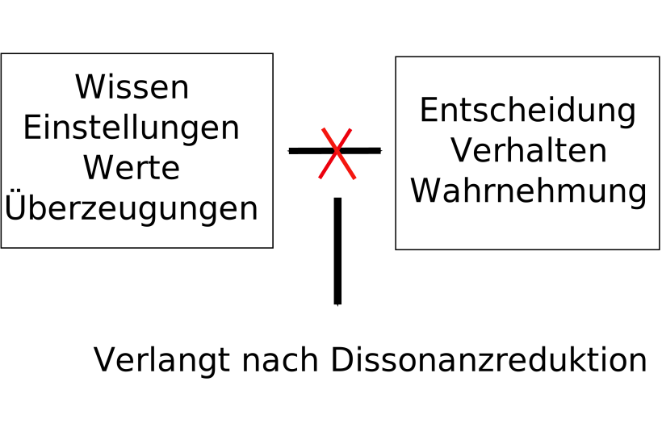
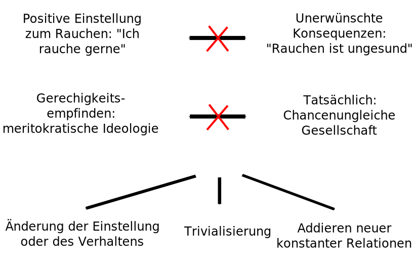

Your browser doesn't support the features required by impress.js, so you are presented with a simplified version of this presentation.
For the best experience please use the latest Chrome, Safari or Firefox browser.
"Tatsächlich ist es tröstlich, zu wissen, dass die meisten Bestandteile des Erfolgs auf Zufall, Schicksal und Geburt beruhen. Erfolgreiche Menschen sind selten bessere und auch nur selten tüchtigere Menschen. Erfolglose müssen die Ursache ihrer Schlechterstellung deshalb auch nicht bei sich selber suchen, (...). Tatsächlich haben sie lediglich Pech gehabt. Man darf sie nicht verachten." (DIE ZEIT 2015; N° 12)
Legitimierung sozialer Ungleichheit
Ein Referat von
Christian Mayer, Klemens Schmidt, Thomas Klebel, Manuel Haybach und Michael Guggenberger
Relative Deprivation
"Wenn (a) eine Person nicht im Besitz eines Gutes ist, (b) andere, mit denen sie sich vergleicht, dieses Gut aber besitzen, (c) sie dieses Gut auch besitzen möchte und (d) ihr dies als machbar erscheint, dann stellt sich das Gefühl ‚relativer Deprivation‘ ein." (Sachweh 2010: 44)
Martin 1982
Delhey & Kohler 2006
Gerechtigkeit
Leistung
Bedarf
Gleichheit
Chancengleichheit
Oberschicht
faktische Chancenungleichheit
normativer Bezugspunkt
Rahmenbedingungen
Jenseits von Gerechtigkeit
Annahme in Theorien der Ungleichheitsforschung
Alle Gesellschaftsmitglieder nehmen soziale Ungleichheit in Gerechtigkeitsbegriffen wahr
systematische Einschränkung ungleichheitslegitimierender Deutungs- und Interpretationsprozesse
Gerechigkeit vs Vernunft
Vergleiche nach unten
Selbstwert
Selbstschutz
"Statuskosmetik"
Seitwärtsvergleich & Abwärtsvergleich
Selbstwertschützendes Potenzial von Abwärtsvergleichen ist begrenzt
Vergleiche über die Landesgrenzen
Untere Schichten
Obere Schichten
Ignorierte Ungerechtigkeit
Obere Klassen
Ungerechtigkeitsempfinden wird ignoriert
Angemessener Umgang mit Situationen
hinzunehmender Bestandteil der sozialen Ordnung
Kognitive Dissonanz

Warum entsteht die Motivation Dissonanz zu reduzieren?
Um konsistentes Selbst zu erhalten
Handlungsfähigkeit erhalten
Möglichkeiten zur Reduktion von Dissonanz

Social inequality and the reduction of ideological dissonance on behalf of the system: evidence of enhanced system justification among the disadvantaged
Hypothese:
Personen, die gesellschaftlich am schlechtesten dastehen bzw. einer benachteiligten Gruppe angehören, weisen die höchste Motivation auf Dissonanz zu reduzieren und neigen deshalb am ehesten dazu das soziale System, dessen Autoritäten und Wirkungen zu unterstützen, zu verteidigen und als gerechtfertigt zu erachten. (vgl. Jost et al., 2003)
Ergebnisse
Schlecht bezahlte LateinamerikanerInnen vertrauen der US-Regierung mehr und glauben eher daran, dass sich die Regierung für das Wohl von allen einsetzt als gut bezahlte LateinamerikanerInnen.
Benachteiligte Personen, wie beispielsweise AfroamerikanerInnen, neigen eher dazu an einen herkunftsunabhängigen Zugang zu begehrten Ressourcen zu glauben als privilegierte Personen.
Ärmere Befragte neigten eher dazu große Unterschiede im Einkommen als notwendig zur Motivation anzusehen als die reicheren Befragten.
Warum das System ändern?
Für uns stellt sich die Frage warum man das System überhaupt ändern sollte, wenn die unteren Schichten, die am meisten von der Umverteilung profitieren würden, das System sowieso legitimieren. Wie seht ihr das?
Ist der Ruf nach Umverteilung nur ein Produkt des schlechten Gewissens der Mittelschicht?